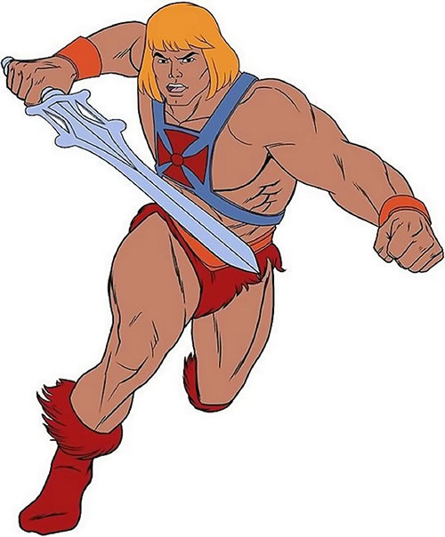

1: He was the first person ever to write an entire season of a television show himself: all 22 episodes of
season
three. It was a mind-boggling feat and yet, despite what must have been an extraordinarily punishing
schedule,
the quality of that season is unimpeachable.
2:He paved the way for digital FX on TV. It wasn’t the first show to use them, but it was the first show to
use
them so extensively, and to use them to create “realistic” virtual sets on a regular basis.
3:He was a fan of the cartoon He-Man and the Masters of the Universe. He wrote a spec script and sent it
directly to Filmation.
They purchased his script, bought several others, and hired him on staff.
4:He was a story editor for the He-Man spinoff She-Ra: Princess of Power, and he worked on jayce and the
Wheeled
Warriors.
5:He wrote 92 of Babylon 5's 114 episodes
6:He planned the entire story arc from the beginning. He kept a written copy of it on a 200-page encrypted
computer file.
7:As as he was writing each character, he built a “trap door” into their
background in order to facilitate the actor’s easy removal from the show.
8:When he was working up the idea for a science fiction series,he began from an interesting standpoint:
budget.
He vowed to try and create a science fiction show that could keep costs to a minimum,That budgetary
mindset
is what sparked the idea for a show set on a
space station.
9:He wanted to create a universe where humanity was still mired in the flaws of our past, where things
like
greed
and infidelity were rampant.
10:He enforced some interesting rules for the show. Episodes were written six episodes in advance, and once
production was started, no changes were allowed to be made
to the script.
